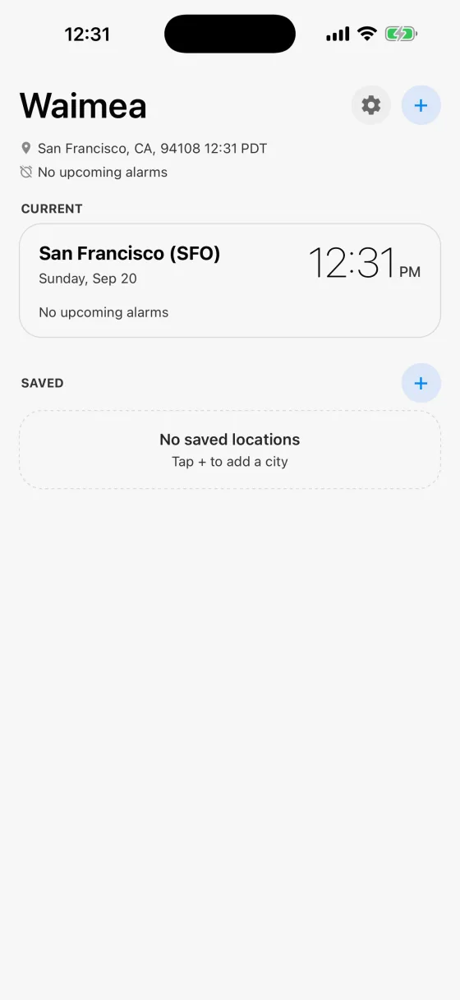
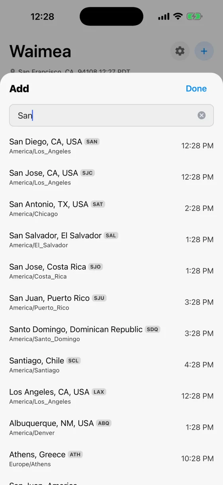
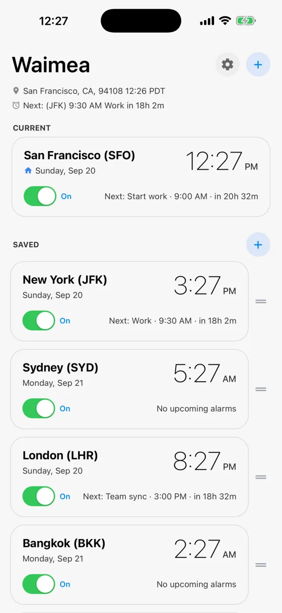
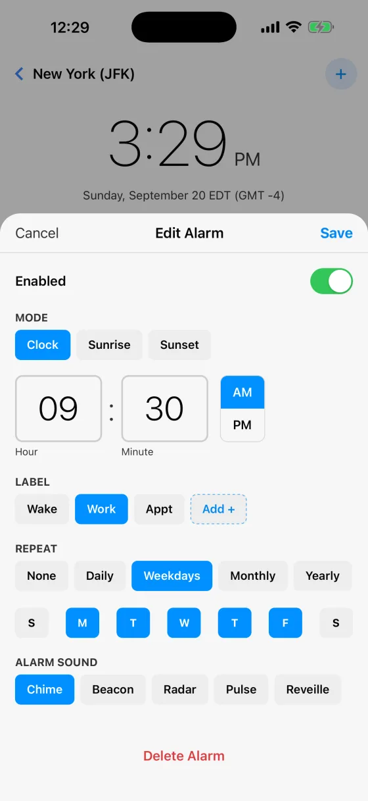
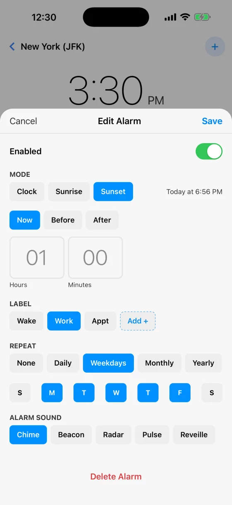
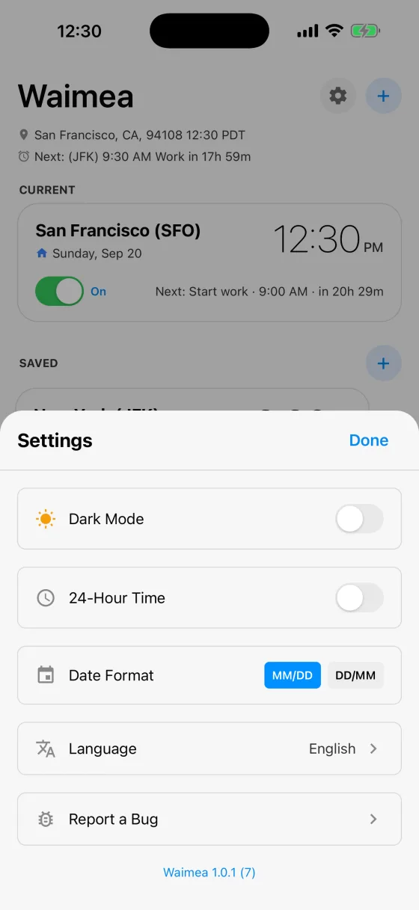

Start here
Waimea opens on the city you are in, worked out from your location and named for the nearest major city, so San Rafael shows as San Francisco (SFO). Nothing is set up for you and there are no alarms you did not make.
SAVED is empty until you fill it. Tap + to add your first city.

Add the cities you live between
Search by city, and each result shows what time it is there right now along with its time zone, so you can tell San Jose in California from San Jose in Costa Rica before you add it.
Airport codes work too: SAN, SJC, SCL. So do local spellings, in any of the twelve languages the app speaks. Try 東京, Москва or München.

Your world at a glance
CURRENT is wherever you are. SAVED is everywhere else that matters to you, each card showing the local time, the date there, and the next alarm with a live countdown.
The little house marks your home city. The switch on a card silences that whole city at once, which is the fast way to mute work alarms for a week without deleting them. Drag the handle on the right to reorder, and the order carries through to your widgets.

Set an alarm that belongs to a place
Tap a city, then an alarm. With Mode: Clock, 9:30 AM pinned to New York rings at New York’s 9:30, whether you are in New York, Lisbon or over the Pacific. That is the whole idea of the app.
Give it a label so the notification says something useful, choose how it repeats, and pick a sound.

Or let the sun set the time
Choose Sunrise or Sunset instead of a clock time and the alarm follows the sun, moving through the year on its own. The line beside the buttons shows what that means today, here Today at 6:56 PM, so it is never abstract.
Add an offset with Before or After: an hour before sunset is golden hour, twenty minutes after sunrise is first light. Each city uses its own position, so an alarm pinned to Reykjavik follows Reykjavik’s sun.

Make it yours
The gear holds dark mode, 12 or 24-hour time, date format, and twelve languages. Changing the language changes everything, including your alarm labels and the names of the sounds.
Report a Bug writes an email with the app’s version and a recent log already attached, which is the fastest way to get something fixed.
Worth knowing
- Your alarms ring wherever you are
- An alarm lives under one city, but it is not silent while you are elsewhere. A San Francisco alarm still rings while you are in Tokyo, at San Francisco’s time. That is the point.
- The switch on a city card silences all of its alarms
- Quicker than turning off five alarms one at a time, and nothing is lost when you turn it back on.
- Widgets and the Watch
- Add a Waimea widget to your Home Screen for your next alarm with a live countdown, and clocks for your saved cities. The Apple Watch app shows the same thing on your wrist.
- Nothing leaves your device
- No account, no servers, no tracking. Your location is used only to work out which time zone you are in. See the privacy policy.